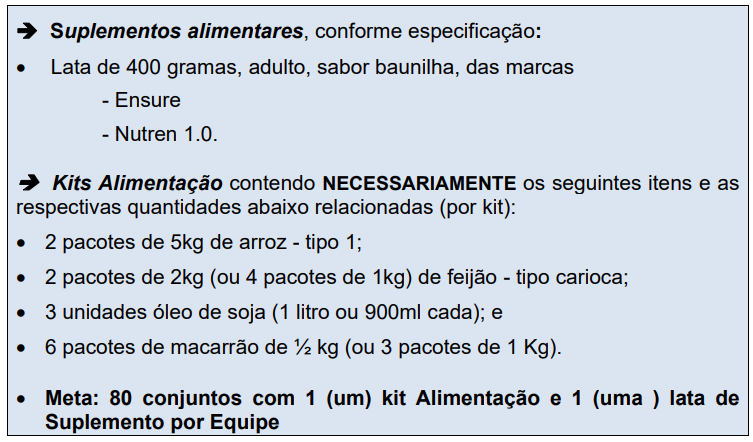
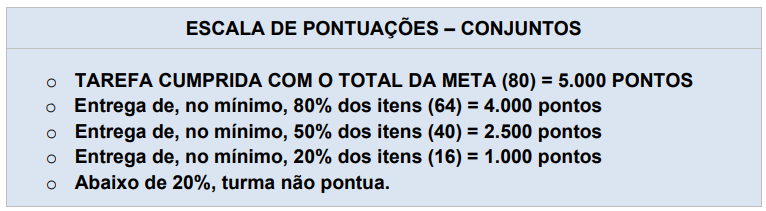
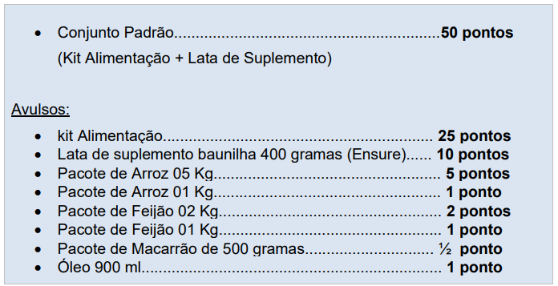

.png )
@trotesolidariounifacef
Cada curso deverá montar uma comissão composta por 8 (oito) estudantes, sendo no mínimo 2 (dois) alunos de cada curso, e será responsável por representar a turma perante a comissão organizadora da Edição de 2023 do Trote Solidário UniFACEF.
A proposta para o ano de 2023 são ações voltadas à comunidade, assim o trote contará com duas etapas: 1ª etapa será a Gincana Solidaria de Arrecadação de: Alimentos e Suplementos tendo uma meta por equipe Doação de sangue - Facultativa 2ª etapa será a Integração e Envolvimento: Ação em entidades sociais da cidade Encerramento - Atividades recreativas
Datas e Horarios:
Abertura -> 14/02 as 8h15min para os alunos do periodo da Manhã e as 19h15min para os alunos do periodo da Noite! O sorteio das equipes e salas de entrega será no mesmo dia as 20h30min
Cada equipe será reconhecida por uma cor (Amarelo, Laranja, Roxa, Verde; e Vermelho), a ser sorteada no dia da divulgação do Regulamento em 14/02/2023. As equipes deverão trabalhar suas respectivas cores, também na noite de encerramento do TROTE SOLIDÁRIO Uni-FACEF 2023, utilizando sua respectiva cor no vestuário e adereços. Cada equipe que tiver os seus membros caracterizados com sua respectiva cor ganhará 1.000 pontos, após avaliação do corpo de jurados. Cabe destacar ainda, que a ordem das atividades, bem como da disposição das salas para entrega dos alimentos, e de apresentação no Encerramento, seguirá a ordem alfabética das cores.
As equipes serão responsáveis pelo planejamento, arrecadação e armazenamento dos itens aqui relacionados. A entrega dos alimentos, dos suplementos alimentares, bem como dos comprovantes de realização das provas da Doação de Sangue e da Ação Social, para fins de pontuação, deverão ocorrer única e exclusivamente, das 8h às 10h00, no dia 29/03/2023, na Unidade I (Av. Major Nicácio, 2433), conforme determinação deste Regulamento.
Alimentos e suplementos

Pontuação
A pontuação poderá, ainda, ser fragmentada em caso de não cumprimento da meta total, com escalas em 80%, 50% e 20% da quantidade inicialmente estabelecida.

Caso a pontuação exceda os 80 pontos, poderá e será contabilizado de forma individual seguindo a seguinte tabela de pontos:

Caso os Veteranos participem com doações, poderá ser emitido certificados de participações por doação.Para tanto cada um deverá efetuar a doação de um conjunto completo (lata de suplemento + kit alimentação), sendo: 30 horas-atividade para doação de 01 conjunto padrão, e 60 horas para dois ou mais conjuntos padrão. A listagem de controle das doações dos veteranos será disponibilizada pelo chefe do departamento (padrinho da equipe) à comissão.
E para a equipe sera contabilizado mais 50 pontos de cada doação de conjuntos padrão por partes dos Veteranos.
DOAÇÃO DE SANGUE
Cada doação equivalerá a 15 pontos. Para comprovar a doação o doador deverá solicitar um cartão do Hemocentro com carimbo do Trote Solidário e assinatura. Os comprovantes deverão ser entregues no momento da entrega dos demais itens no dia 29/03/2023, das 08h00 às 10h00 na Unidade I do Uni-FACEF.
Ação social em entidades de Franca-SP
Caberá aos alunos da equipe desenvolver uma ação em uma entidade a ser definida pela equipe, contudo faremos um sorteio visando atender cinco segmentos distintos:
- 1. creche
- 2. lar de idosos
- 3. entidade que trabalha com deficientes visuais
- 4.entidade que trabalha com pacientes com câncer
- 5.entidade que trabalha comportadores de necessidades especiais.
O sorteio seguirá esta ordem. Para fins de comprovação, a Equipe deverá apresentar Relatório com apresentação da Entidade e detalhes da ação desenvolvida, bem como um pendrive com fotos e vídeos, no momento da entrega dos demais itens no dia 29/03/2023, das 08h00 às 10h00 na Unidade I do Uni-FACEF.
PONTUAÇÃO DESTA ATIVIDADE = 2.000 pontos
Apresentação musical e cultural
Para a realização dessa prova, cada equipe poderá utilizar recursos musicais e/ou teatrais (música, dança, teatro, mímica, pantomima, teatro de bonecos, teatro de sombras etc.). A prova terá duração máxima de 4 minutos, por equipe, e haverá controle do tempo de apresentação. Caso a equipe exceda o tempo limite, previsto no Regulamento, ela será penalizada pela Organização. A ordem de apresentação será a sorteada no dia 14 de março. É obrigatória a participação de:
- 01 aluno Veterano
- 05 Alunos calouros no maximo
- Estudantes de todos os cursos da equipe
As apresentações que utilizarem sons de Instrumentos Musicais deverão levar gravados ou fazer uso de playbacks. Efeitos especiais pirotécnicos estão proibidos ao longo da noite de Encerramento e nas apresentações.
Caso a equipe utilize, em sua apresentação, papéis ou outros itens que sujem o palco, deverá limpá-lo para a próxima apresentação. Para isso, a equipe terá até 1 minuto para a limpeza e retirada de material cenográfico e adereços que foram utilizados na apresentação.
Essa tarefa vale 2.000 PONTOS, determinados pela avaliação dos jurados convidados, que seguirão os critérios de avaliação abaixo relacionados:
- Criatividade até 700 pontos
- Performance até 700 pontos
- Contextualização até 600 pontos
As equipes serão responsáveis pela escolha de: música, figurino, maquiagem, adereços, cenário, dublagem, coreografia, encenação etc. Sugere-se que seja mantido sigilo pelas equipes sobre o teor de sua apresentação até a data de apresentação, que acontecerá no dia 31/03/2023.
A equipe que exceder o tempo máximo de 4 minutos, será penalizada perdendo 200 pontos, o quê corresponde a 10% do total..
Mascote da equipe
Apenas por cumprir a tarefa = Até 500 PONTOS
- Originalidade (notas de 200)
- Caracterização (notas de 0 a 150)
- Atuação (notas de 0 a 150)
Quiz
Na noite de encerramento, dia 31/03/2023, cada equipe será representada por 01 (um) Calouro e um Veterano, para participar de uma prova de perguntas e respostas. As 05 (cinco) perguntas serão exibidas no telão, com as alternativas. Para responder, as equipes utilizarão placas com as letras das alternativas. O tema será o Uni-FACEF
Pontuação Extra
Também na noite de encerramento do TROTE SOLIDÁRIO Uni-FACEF 2023, ocorrerão provas-surpresa e que valerão pontuação. Cada equipe deverá trabalhar a identidade visual (cor da roupa, adereços etc.) e a animação, para a noite de encerramento do TROTE SOLIDÁRIO Uni-FACEF 2023, de forma a destacar sua torcida, pois esse quesito será avaliado pelo corpo de jurados. Atribuir-se-á 1.000 pontos à equipe que cumprir este quesito.